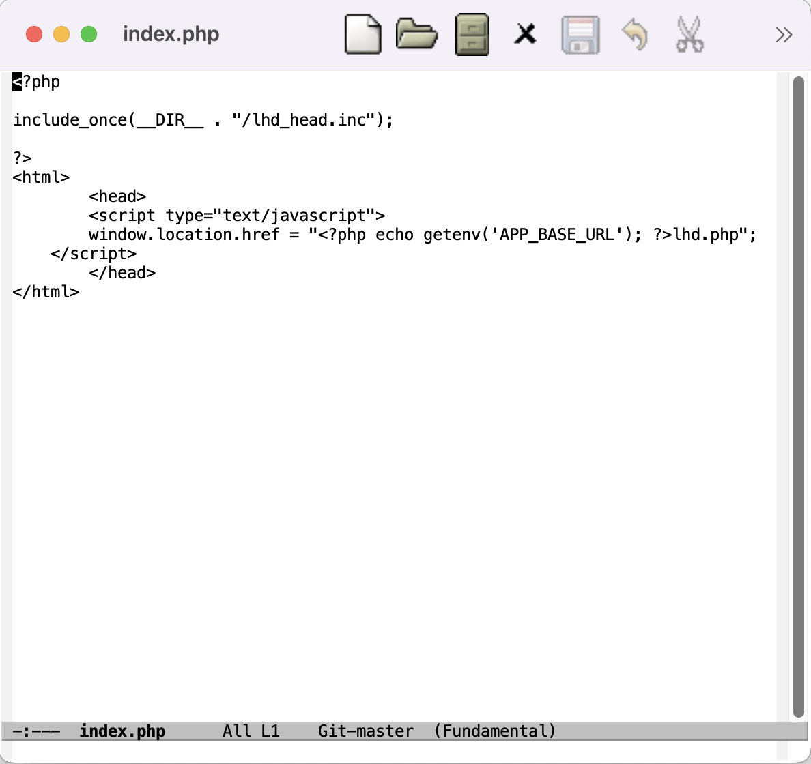
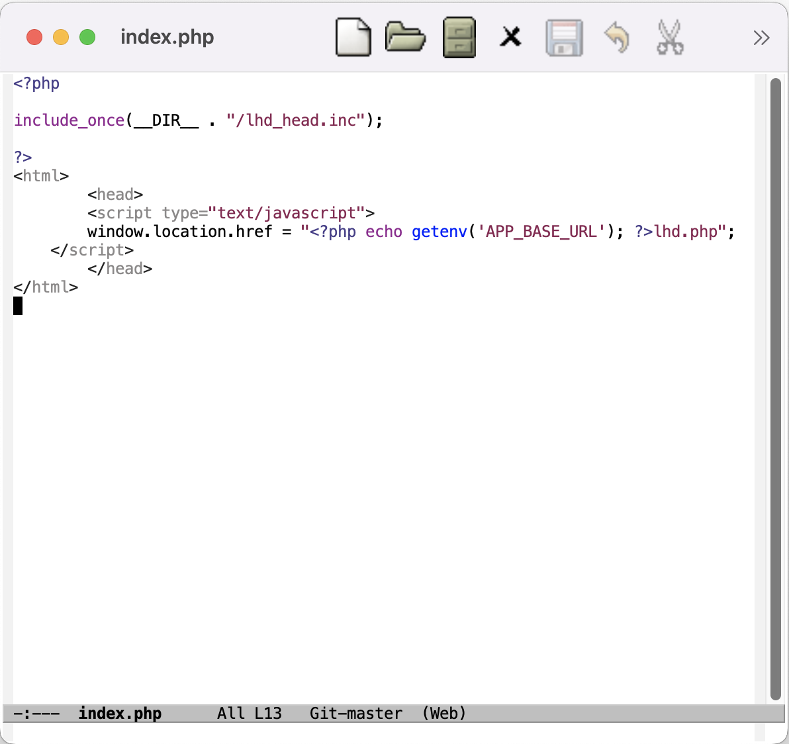
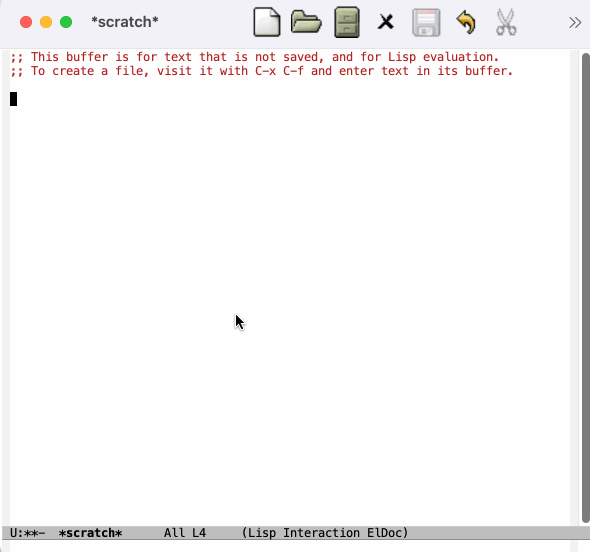

Emacs en partant de zéro
https://go.epfl.ch/emacsdezero
Dominique Quatravaux
20.09.2023
Table des matières
Chapitre 1 : autonomie
But #1 : installation
- Pour le présent dojo : version minimale = Emacs 27 (celui d'Ubuntu Jammy), mais plus récent ≡ mieux
💡🥱 Si vous vous ennuyez : cliquez sur ˅ en bas à droite…
But #2 : éditer un fichier
- Ouvrir un fichier
- À la souris, via les menus
- Au clavier
- 💡 Les menus montrent les raccourcis clavier !
- Suivez le guide : GNU Emacs Reference Card
- Visualiser l'état sauvegardé ou non
- 📚 Vocabulaire : modeline
- Sauvegarder
But #3 : plusieurs fichiers à la fois
- 📚 Vocabulaire : buffer
- Exercice : découvrir comment changer de buffer
- à la souris
- au clavier
- 📚 Vocabulaire : minibuffer
- La complétion avec Tab dans le minibuffer
- On peut cliquer dedans !
- Plusieurs buffers à l'écran ? Pas de panique :
C-x o
C-gouESC ESC ESC→ À apprendre par cœur
But secondaire #3.1 : déplacements à l'intérieur d'un buffer
- Commandes de mouvement : → doc officielle
- Recherche littérale avant / arrière
- Recherche par expression régulière avant / arrière
But #4 : premières personnalisations
- À la souris : Options → Customize Emacs → Top-level Customization Group
- Au clavier :
M-x customize <RET>- 💡
M-x== “command palette” - Votre touche méta ne marche pas ? Un peu de patience… (§ suivant)
- Utiliser Escape pour l'instant :
Esc x customize <RET>
- Utiliser Escape pour l'instant :
- 💡
Un buffer n'est pas un fichier !
Dans un buffer *Customize*, on ne peut pas modifier le texte.
💡 Les buffers qui n'ont pas de fichier ont typiquement un nom qui commence et finit par *.
Que faire alors ?
- Help → Describe ▸ …
- … Describe Buffer modes
- Au clavier : C-h → …
- … → C-h
- C-h m
Exercice : customiser delete-selection-mode
Validation :
- Ouvrir un fichier dans un buffer
- Sélectionner du texte
- Appuyer sur une lettre
Résultat attendu : la sélection s'efface et est remplacée par la lettre saisie.
Exercice : 🤫 C-g sans la 🔔
Exercice : 🤫 C-g sans la 🔔
Solution : M-x customize-variable <RET> visible-bell
But #5 : persistance des personnalisations
Le fameux .emacs.d/init.el…
- Sauvegarder un buffer
*Customize*? 🤔 - Les fichiers
~/.emacset~/.emacs.d/ - 🎯 Definition of done :
- Emacs redémarre sans signaler d'erreurs
- Les changements de configuration sont persistants
- Exercice : renommer
~/.emacs→
~/.emacs.d/init.el- Depuis Emacs bien sûr !
But #6 : maître des touches
... Quelles touches ?
- Ouvrir votre
~/.emacs.d/init.el - Rappel :
- Help → Describe ▸ Describe buffer modes
C-h m
- 📚 Vocabulaire : major mode, minor mode(s)
- Exercice : comment faire pour tester mes changements de
.emacs.d/init.elsans redémarrer Emacs ? - 📚 Vocabulaire :
eval
Maître des touches : touche Meta
Référence : https://www.emacswiki.org/emacs/MetaKeyProblems
- Mac:
M-x customize-group <ret> ns - Linux Ubuntu : (?)
Maître des touches : C-z → undo
Notre premier fragment d'Emacs Lisp «fait main» :
(global-set-key [(control z)] 'undo)
En savoir plus sur Emacs Lisp
C-h florsque le curseur est sur une fonction Emacs Lisp pour avoir de l'aide- Permet de connaître la/les touche(s) qui active(nt) cette fonction
- 📚 Vocabulaire : fonction interactive
But #7 : un mode majeur - Web-mode
- Ouvrir un fichier PHP
- 
- … C'est pas terrible.
Configuration des dépôts
M-x package-list-packages <RET>Bien… Mais pas top !
(add-to-list 'package-archives '("melpa" . "https://melpa.org/packages/"))- Tiens… Ça plante.
- 💡 La variable
package-archivesest modifiée avant d'être définie. 🛠️ Insérer à la ligne précédente
(require 'package)
- 💡 La variable
Exercice : installer web-mode
- Rappel : depuis le buffer
*Packages*,C-h mpour comprendre dans quel état j'erre - Quand c'est fait : 
- ouvrir ou basculer vers un fichier PHP
M-x web-mode- … Profit!
- … Mais ça ne «tient» pas au redémarrage ☹ À suivre…
🤦 Pourquoi ça ne «tient» pas ?… 🤦
Pour plusieurs raisons, le système de paquetages n'est pas au cœur de l'extensibilité d'Emacs
- Historique : Emacs date de 1985 (CTAN : 1992, CPAN : 1995)
- Stallmann : Cathédrale vs. bazaar, idéalisme / control freak vs. pragmatisme
La solution
- Installer use-package (cf. supra)
(package-initialize) (require 'use-package) (use-package web-mode :mode "\\(html?\\|php\\)$")
La solution de la solution

M-x regexp-builder
… et/ou RTFM :
M-x info→g (emacs) <RET>- Cliquer sur
Regexps
But #8 : magit — Une première “killer app” avec Emacs
- Installer Magit
- Configurer la combinaison de touches
C-x v bpour qu'elle lance la commandemagit-status
Solution
Toujours avec use-package:
(use-package magit
:bind ([(control x) (v) (b)] . magit-status))
🎯 Definition of done : pour de meilleures performances, les paquetages «lourds» comme Magit, ne doivent pas se charger au démarrage d'Emacs.
- Contrôle avec
C-h v features <RET>: dans votre Emacs fraîchement redémarré, cette variable ne doit pas contenirmagit
Je sais faire tout seul ! 2/5
Avec l'aide de Google, je choisis, j'installe et je configure ce qui me plaît parmi :
- les modes adaptés à mes langages de programmation préférés
column-number-mode: fait apparaître le numéro de la colonne dans la modeline à côté du numéro de ligne.git-gutter: les lignes modifiées d'un fichier qui est sous Git sont marquées dans la margeundo-tree: je voyage dans les lignes temporelles de mon travail d'édition
Je sais faire tout seul ! 3/5
J'évalue, configure et choisis un ou des frameworks de complétion :
- company (recommandé)
- ido
- auto-complete
- Corfu
- (Old and busted: icicles, icomplete)
- Moar completion?
- Helm
- yasnippet
- Etc. 🎬
Je sais faire tout seul ! 4/5
Je consacre du temps pour maîtriser les “power features” d'Emacs 💪 :
org-mode: ma vie en texte plattramp: j'accède à des fichiers distants en ouvrant/ssh:remote-host:/var/www/vhosts/tototutu.php- … Et je fais marcher Magit à distance ! #emacsenprod
Chapitre 2 : efficacité
… Ou : tout ce qu'on peut encore faire avec Emacs, sans apprendre Emacs Lisp (pour l'instant).
But #1 : multi-fenêtrage
📚 Vocabulaire : une frame est une division de la fenêtre d'Emacs dans laquelle s'affiche un buffer.
Exercice : que font les combinaisons de touches suivantes ?
C-x 2C-x 3C-x 1C-x 0
But #2 : Emacs comme serveur
cat > $HOME/bin/emacsedit <<SCRIPT
#!/bin/sh
/quelque/part/bin/emacsclient "$@"
SCRIPT
chmod a+x $HOME/bin/emacsedit
export EDITOR=$HOME/bin/emacsedit
⚠ Remplacer /quelque/part par le chemin d'accès correct, selon votre système d'exploitation
Tester avec git commit
But #3 : framework(s) de complétion
But #4 : gérer le code dans ~/.emacs.d/
- Y créer un dépôt Git (facile)
Déplacer les customizations dans un fichier à part (qu'on pourra choisir de
.gitignorer) :(require 'custom) (setq custom-file (concat user-emacs-directory "emacs-custom.el")) (when (file-exists-p custom-file) (load-file custom-file))
But #5 : registers (1/3)
📚 Vocabulaire : un “register" est comme signet de navigateur généralisé. Il a un nom en une lettre, choisie par l'utilisateur ("a" dans les exemples qui suivent).
But #5 : registers (2/3)
On peut par exemple stocker dans le register a :
- le point actuel dans un buffer :
C-x r SPC a, - un bloc de texte (📚 Vocabulaire : une «région») :
C-x r x a, - la configuration actuelle des frames dans la fenêtre courante (
C-x r f a) ou même de toutes les fenêtres (C-x r w a), - … Ou d'autres choses encore (
C-x r C-h)
But #5 : registers (3/3)
Pour récupérer le contenu du register a (par exemple) :
C-x r i apour coller ce qu'il contient (région ou rectangle) ;C-x r i apour sauter vers ce qu'il pointe (position, configuration des frames ou fenêtres)
Chapitre 3 : maîtrise
But #1 : packages-as-code
L'installation des paquetages a été faite à la main et n'est donc pas as-code. Frustrations prévisibles lors de la prochaine mise à jour d'Emacs…
→ Solution : apprendre et mettre en œuvre quelpa et quelpa-use-package
But #2 : aller plus loin avec org-mode
org-mode pour les présentations : ox-reveal
But #2 : aller plus loin avec org-mode
org-mode pour le getting things done :
- En-têtes TODO :
M-S-RETetC-c / t (global-set-key [(control c) (.)] 'org-time-stamp)
But #2 : aller plus loin avec org-mode
org-mode comme un outil de carnet de laboratoire :
- org-babel : j'inclus des scripts dans mon fichier .org; je les exécute; leur résultat est inclus dans le document org
hyperliens vers d'autres fichiers (comme par exemple du code source) avec
C-c C-l:(global-set-key [(control c) (control l)] 'org-store-link)
But #3 : Emacs comme IDE (1/2)
… Ce n'est pas le plus simple.
- En 2023, Emacs ne peut pas espérer régater avec IntelliJ (par exemple) sur le plan des fonctionnalités
- … Mais il reste plus rapide, et peut donc aider les “power users”.
But #3 : Emacs comme IDE (2/2)
But #4 : Apprendre Emacs Lisp
- Un plan de route : https://emacs.stackexchange.com/questions/47318/how-can-i-start-learning-emacs-lisp
M-x info <RET> (elisp) <RET>- Choisir un dialecte «moderne»
- Paquetage cl
lexical-binding: t
But #4 : Apprendre Emacs Lisp
Choisir des buts de difficulté croissante :
- 💪 Configurer telle variable seulement pour Emacs en mode terminal (
emacs -nw) - 💪💪 Supprimer l'affectation de touches
C-c C-ldans une pluralité de modes (avec une boucle) - 💪💪💪 supprimer un message perturbant avec
advice-add
⌨️ Supprimer l'affectation de touches C-c C-l dans plusieurs modes ⌨️
… De sorte que C-c C-l d'org-mode prenne le pas.
(dolist (cons-mode-map `((cc-mode . c-mode-base-map)
(python-mode . python-mode-map)
(python . python-mode-map)
(sh-script . sh-mode-map)
(web-mode . web-mode-map)))
(with-eval-after-load (car cons-mode-map)
(define-key (symbol-value (cdr cons-mode-map))
[(control c) (control l)] nil)))
(FOO . BAR), une autre façon d'écrire(cons FOO BAR)- Accesseurs :
(car)et(cdr)
- Accesseurs :
- 🔎
C-h C-fsurdefine-key,with-eval-after-load,symbol-value
🤫 Quelpa silencieux 🤫
Marre des messages not upgrading ceci ou cela ?
(advice-add
'quelpa-build--message
:before-until #'(lambda (msg &rest ignore)
"Ignore les messages contenant «Not upgrading»"
(string-match-p "Not upgrading" msg))
'((name . quelpa-build--message--débavardage)))
👨🍳 advice-add 🔗, pour patcher à la volée les fonctions écrites par d'autres !